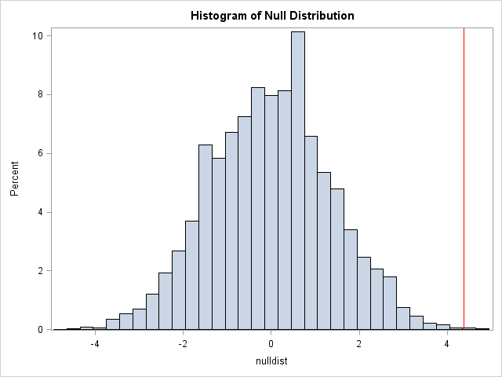
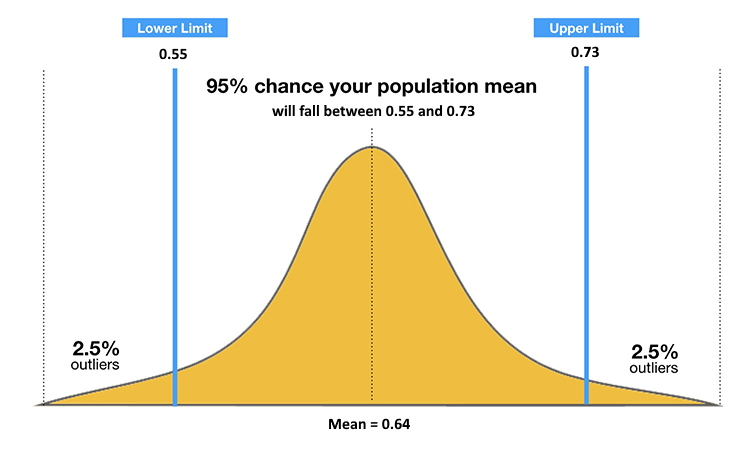

Chapter 1 Part 1
Investigations 1.1 - 1.7Chapter 1 Part 1
Investigations 1.1 - 1.7 Sep 25, 2020
In section 1 of Chapter 1, we covered many key basic details that will help us move forward with interpreting statistics.
Investigation 1.1: Friend or Foe?
Key Terms
Null Hypothesis: The null distribution is the distribution of randomly generated statistics based on an assumed chance model, generally excluding any variables in question. This is a tool used to determine the p-value of an event, otherwise known as the long-run probability of an event.
Alternative Hypothesis: The researchers are hoping to show by doing the study. When evaluating the null hypothesis, instead of "accepting" or "rejecting" the alternative, statisticians decide to either "reject the null hypothesis" or to say that the null hypothesis is "plausible."
P-Value: When comparing the probability of any given event to the random process specified by the null hypothesis, the p-value helps us judge how much certain variables impact the outcome, if at all. The lower this p-value, the less likely the event is to occur on its own, thus implying a greater influence from other variables.
"Statistically significant" p-values are generally below 0.10
More significant results have values as low as 0.05
Sometimes the p-value is lower than 0.01, showing very strong evidence against the null hypothesis
In the "Friend or Foe?" study, infants were shown two different scenarios, of a shape helping another climb a hill, and of a shape hindering a another climb a hill. The infants were afterwards asked to choose one toy to play with. Using the null hypothesis tool, if we assume the previous context of each shape "helping" or "hindering" doesn't affect the infants' choices, then the resulting likelihood of either outcome should be 0.5
Thus, when the evidence comes forth that 14 out of the 16 infants tested chose to play with the "helper," we can understand how this is statistically significant.
Investigation 1.3: Do Names Match Faces?
Key Terms
Observational Units: These are the people or objects being studied. Data about how "variables" affect them is collected, or characteristics that vary from observational unit to observational unit.
Sample Size: The number of observational units in a given study.
Variable: Two major types of variables exist, "categorical" (assigning each observational unit to a category) or "quantitative" (assigning each observational unit a numerical measurement). When a categorical variable only has two categories, we call this a "binary" variable.
Statistic: A known numerical value that summarizes the observed results
Parameter: A (generally) unknown numerical summary, but instead applied to the underlying random process that generated the data.
In an effort to undersand "facial prototyping," researchers asked participants to match the names "Bob" and "Tim" to the above pictures. We learned that of the 28 "observational units" (the 28 students asked to participate) that 23 matched the face with the goatee with the name Tim. We were able to use the null hypothesis test to determine the probability of this outcome occurring by chance, a probability of 0.0456%. Of course, this is inconclusive with such a small sample size, but we nonetheless can "reject the null hypothesis."
Investigation 1.6: Kissing the Right Way
Key Terms
Confidence Interval: A confidence interval (CI) gauges how plausible specific parameter values are when determining the probability of an outcome.
In this study, researchers observed which side couples leaned towards when kissing, the left or right. We were able to find that based on the research results that 80 out of 124 participant couple leaned to the right, that the probability of any given couple leaning to the right was perhaps around 0.6452. However, this may not exactly represent the actual probability.

Instead, we can use a CI to determine a possible range of probabilities. The above shows how we can be 95% confident that the actual probability will fall somewhere between 0.55 and 0.73 based on our research results. Similarly, by increasing the room for error, we can by 99% confident that the probability falls between 0.53 and 0.75 because we are covering more possible answers.
Investigation 1.7: Improved Baseball Player
Key Terms
Level of Significance (α): A standard specified in advance for deciding when a p-value is small enough to provide convincing evidence against the null hypothesis. It acts as a threshold for the p-value; when below, the results are said to be "statisically significant," and when above we simply "fail to reject" the null hypothesis. This number is generally around 0.01 or 0.05.
Rejection Region: The values for the statistic we would need to observe in order to reject the null hypothesis. In other words, the miminum number of successes to bring the p-value below our α threshold.
Type I Error: An error of significance when the null hypothesis is true but the test decision is to reject the null hypothesis. This is a false positive, and can be mitigated by lower the α value.
Type II Error: An error in which the null hypothesis has failed to be rejected, even though the null hypothesis is false. This is a false negative.
Power of a Test: The probability of correctly rejecting the null hypothesis when π = πa. Essentially, how likely is our test to detect a difference in parameter. Power = 1 - P(Type II error)
In this investigation, we explored the hypothetical scenario in which an improved baseball player wants to demonstrate his abilities in order to convince his manager to give him a salary raise. From batting .250 to .333, the improvement is very large over just 20 pitches we used Level of Significance and errors to explore the possibility of successfully convincing a manager, as well as how to mitigate errors, like increasing the number of hits out of 20 to convince the manager of the improvement.